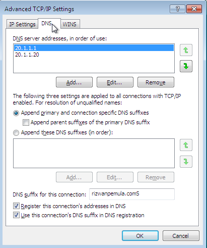

Router
Interfaces
ens33 NAT : 10.1.1.10/24
ens36 LAN (Server): 20.1.1.1/24
ens37 LAN (Windows): 30.1.1.1/24
Package
- NAT Gateway
- SSH
- DHCP Server
- DNS (New)
Install Package
DNS server merupakan sebuah database besar yang berfungsi menyimpan semua IP address yang digunakan dalam hostname. Database besar tersebut memuat banyak keterangan tentang IP addres jadi saat anda mengunjungi website tertentu. Misalnya youtube.com maka DNS server akan mentranslate atau menerjemahkannya ke IP address youtube.
apt install bind9 dnsutils
Konfigurasi
Sebelum itu kita perlu pindah kedalam directory dimana semua file DNS itu disimpan.
cd /etc/bind
Setelah itu kita akan copy file yang diperlukan agar saat kita nanti ada kesalahan konfigurasi tidak akan mempengaruhi dari file asli dan berguna sebagai file backup.
cp db.127 db.10 cp db.local db.rizwan
Lalu kita akan melakukan konfigurasi untuk file db.10
nano db.10
;
; BIND reverse data file for local loopback interface
;
$TTL 604800
@ IN SOA rizwanpemula.com. root.rizwanpemula.com. (
1 ; Serial
604800 ; Refresh
86400 ; Retry
2419200 ; Expire
604800 ) ; Negative Cache TTL
;
@ IN NS ns1.rizwanpemula.com.
@ IN PTR rizwanpemula.com.
20 IN PTR rizwanpemula.com.
20 IN PTR www.rizwanpemula.com.
20 IN PTR myweb.rizwanpemula.com.
20 IN PTR mail.rizwanpemula.com.
20 IN PTR php.rizwanpemula.com.
20 IN PTR phpmyadmin.rizwanpemula.com.
20 IN PTR wordpress.rizwanpemula.com.
nano db.rizwan
;
; BIND data file for local loopback interface
;
$TTL 604800
@ IN SOA rizwanpemula.com. root.rizwanpemula.com. (
2 ; Serial
604800 ; Refresh
86400 ; Retry
2419200 ; Expire
604800 ) ; Negative Cache TTL
;
@ IN NS ns1.rizwanpemula.com.
@ IN A 20.1.1.1
@ IN NS rizwanpemula.com.
@ IN A 20.1.1.20
ns1 IN A 20.1.1.1
www IN A 20.1.1.20
myweb IN A 20.1.1.20
mail IN A 20.1.1.20
php IN A 20.1.1.20
phpmyadmin IN A 20.1.1.20
wordpress IN A 20.1.1.20
nano named.conf.default-zones
zone "rizwanpemula.com" {
type master;
file "/etc/bind/db.rizwan";
};
zone "1.1.20.in-addr.arpa" {
type master;
file "/etc/bind/db.10";
};
Selanjutnya kita akan konfigurasi resolv agar server bisa menerjemahkan request client yang akan menuju domain kita.
nano /etc/resolv.conf
search rizwanpemula.com nameserver 20.1.1.1 nameserver 20.1.1.20 nameserver 8.8.8.8
Setelah itu kita restart service DNS agar bisa berjalan dengan baik
systemctl restart bind9
Server
Interfaces
ens33 LAN (Server): 20.1.1.20/24
Package
- SSH
- Apache2 (New)
Install Package
Apache adalah perangkat lunak server web yang bertanggung jawab untuk menerima permintaan HTTP dari pengunjung dan mengirimkan kembali informasi yang diminta dalam bentuk halaman web . Atau lebih sederhananya, memungkinkan pengunjung melihat konten di website Anda.
apt install apache2
Windows
Sekarang untuk Windows kita perlu mengisi DNS dan Domain yang akan kita tuju. Caranya adalah Network Connection> Properties> Internet Protocol Version 4> Advance> DNS
Setelah itu kita buka browser untuk cek apakah service DNS dan Apache2 sudah bisa berjalan disisi Client dengan cara ketikkan nama domain.